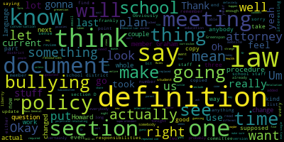
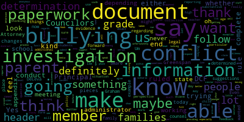
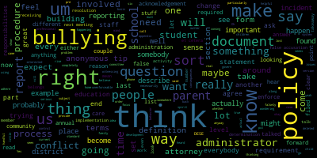
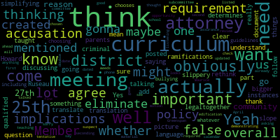

[Ruseau]: 1927. Additionally, if you wish to submit any comments or questions during the meeting, you can email me to pruseau at medford.k12.ma.us. Those submitting an email must include the following, your first and last name, your Medford Street address, your question or comment. The memo is that as approved by the committee on January 24th, 2022 in paper 2022-5, the Rules and Policy Subcommittee will review the Bullying Prevention and Intervention Plan for recommended updates. This is continued from the Rules and Policy Subcommittee meeting, which was previously held on December 6th, 2022. Actually, we've had one more recent than that as well. So I'll get that fixed on the next agenda. Oh actually, I'm sorry. The agenda continued from the Rules and Policies Subcommittee meeting previously held on March 2nd, that's the one, 2023. So I'm going to take the roll. Member Graham?
[hGxT3FthToQ_SPEAKER_02]: Here. Member McLaughlin? Here.
[Ruseau]: Member Ruseau? Here. Three present, we have a quorum. So for those that are joining us and have not been in this, this is our third or maybe our fourth meeting on the bullying prevention and intervention plan. We are working to update the plan, bring it in compliance with the law that seems to change more often than we expected, and also to make it human usable, which it is not at the moment. The last meeting we had, there were a couple of takeaways that's fine either way. Um member Glockman was going to begin work on a flow chart, which we. Can get to today or not. That's fine. Either way. Um the member Graham, um, after this meeting. The goal is for her to, um, review the structure of the the document. Um and I was assigned to clean the hundreds of comments in the Google Doc that make it interesting, but there's no date and time stamp. I mean, there is, but it's a real hard thing to use. And then check on the sections that are required in the law so we can delete unnecessary stuff from the current document. Between then and now, I heard from our school attorney who was supposed to be the star tonight. Unfortunately, COVID is not done. So we will not have our attorney tonight, which sort of threw me into a bit of a like, oh, okay, something to do tonight because this meeting is scheduled. He did review the entire policy and sent me an email and told me that there are a substantial number of updates. Lawyers don't tend to use a lot of exciting language, but I read into his very short email that most of the policy does not appear to be what he thinks it should be. He didn't send me a list or anything like that. So the plan was he was going to go through that with us tonight, but I just found out yesterday that he was not going to be able to make it. I did want to just share some of the work I did since the last meeting. So I did go to the actual law, section 370, I actually forget the full reference from Mass General Law. And I went through the document, I copied it out of the Mass General Law website, which is remarkably, 1995, if you ever enjoyed using it. And so I put it, I formatted it, actually did some indentation just so it was readable, because it's just, if you look at the law, it is a gigantic blob. It is really a remarkable, when you look at a lot of other laws on the state website, you see formatting and spacing and like, you can read it. This one is very, very strange. It's just a gigantic dump. It looks like without return characters, frankly. So I went through and did that just so it would be easy enough for us to With Mr. Greenspan, our attorney, who's not here, with him here, we would be able to look at the actual text that he was referring to. That took a bunch of time, but is of no value. The only thing I did other than that was I was assigned to work on the actual definition section, look at the definitions throughout the document. I also then looked at the definitions from the state's website, the Mass General Law, which includes a whole pile of definitions, and frankly, will solve a couple of the questions we had. But before I share my definitions, did anybody want anything you wanted to say?
[hGxT3FthToQ_SPEAKER_02]: Just talk continuously now. Sorry. No, I think I've heard.
[Edouard-Vincent]: Yes, I would love to see some of the changes that you had and some of the pieces that you just were talking about. And knowing that, unfortunately, Attorney Greenspan isn't able to be with us today, maybe we can at least look at some of what the suggestions were and then know that moving forward, we'll have that other legal counsel regarding the document. Great, thank you.
[Ruseau]: Needed to hear somebody's voice other than mine. Okay, so I went through the definitions that are in the current document. Can everybody see this and is it big enough? Well, that's good. So I took a couple, okay, I took one liberty. In the actual law, there's a whole section with definitions at the top, which you will see here. And then in, after that, there's two examples for which they should have just put a definition and instead had this like three line long school districts, charter schools, chapter, you know, 766 schools or whatever, day schools that like listed all the schools that law applied to. And it would repeat it, I don't know, a couple dozen times, which added a huge amount of text. So that was the liberty I took here was to simply convert that to say, let me find an example. It's not so long anymore. Okay. School district, there it is. So where I say school district, Well, this is for us. We're not any of those other things. So I chopped, frankly, a remarkable amount of language out of their definition because we don't need that other stuff. So that was a liberty I took. I've changed this slightly. The current version in the document says definitions. Oops, let me grab that. It's a little long, but it also,
[hGxT3FthToQ_SPEAKER_02]: language requires us to, sorry, the scrolling is slower when I'm on Zoom.
[Ruseau]: The current language says several of the following definitions are copied directly from Mass General Law, Chapter 71, Section 37-0, as noted below. And, you know, taking to heart that a lot of people had and all of us I think had really been like this current document isn't terribly usable. You know, this is supposed to be a document that is used. So I rewrote that to say definitions substantially taken from that are italicized. So I couldn't say we copied it because I took out all that extra language about, you know, all the different kinds of school districts that exist. Other than that, these are the definitions right out of the law. And I take the definitions out of the law to be that that's the definition we have to use. Now, I mean, you could say I've taken liberties here, but I think there's no change to the intent or meaning of the language at all to take out that chunk. I think the definition of cyberbullying, I wouldn't write it this way. But again, it's in the law. So if Howard was here, I would ask him, are we required to use these definitions? And I think we would want to ask him that when we see him at the next meeting. Because these are definitions that need to be updated, frankly. Hostile work environment. I added a couple that we didn't have. that were in the law that I thought were actually something we should have. And in the last meeting, we had a pretty interesting conversation. I don't think we ended with any kind of decision about whether to use perpetrator or what was the other word?
[hGxT3FthToQ_SPEAKER_02]: Aggressor.
[Ruseau]: perpetrator feels an awful lot to me like you're already convicted, but that's what's in there. So I mean, unless if Howard says we're supposed to use these words and I guess we're stuck. And if he says we're not, then we're gonna have to have that conversation again. But I feel like I'd rather wait to dig into what we wanna use until Howard can tell us that we could change it. So just from a efficiency perspective. Retaliation, school grounds, school staff is when I added. So every time it says school staff, this was the other liberty I took, I'm sorry, there was two. Every single time school staff was referenced, it would be school staff, including but not limited to educators, all that whole thing over and over and over again. So I put school staff and we could discuss whether we wanna put like a C definition or something like that or not. I mean, this is just the definition section. And then the other one is victim, which we did. I think that might be the one we talked the most about, but that is also in the law. So I think we have conversations to be had once we have Howard to tell us there's no point or not. So that was the definitions that we currently had, plus the addition of school staff and the addition of perpetrator, because our current definitions actually didn't, oh, it did have aggressor, sorry.
[hGxT3FthToQ_SPEAKER_02]: We don't have victim either, but I put that in because it was in the law.
[Ruseau]: This is the actual copy. I can share this with everybody after the meeting, if you want to take a look at it. This is the copy of the law that has had formatting and then a couple of small items that are in the law I just deleted. They were things specific to charters. They just weren't relevant to us. And just to have a clean version to work from and understanding the law, I thought this was helpful. I have also taken the three times the law has been updated and I've applied those changes into this document. I did not look to see what changed. So in 2014, there was a change that simply took all of section D, whatever the law was before, It replaced section D with a new section D. So I copied the new version of section D into here. I didn't painstakingly look to see what had changed in the law. And I'm guessing that's some of what Howard will have to talk about is that maybe we have language that needs to be updated because the law was changed three times or four times. So I don't know what else we should be talking about.
[hGxT3FthToQ_SPEAKER_02]: I really was planning for Howard. Anybody want ever grammar you're talking, sir. I was thinking sorry, quite ready yet.
[Edouard-Vincent]: Mr. dilemma just raised his hand.
[D'Alleva]: Mr. Leavitt, hi, sorry. Oh, that's okay. I was wondering, Paul, because I haven't seen, sorry, member Ruseau. I haven't seen the law in a while, but in our old policy, there was something about filing a false bullying report and what would happen if somebody did. I didn't know if that was present in the law at all.
[Ruseau]: It is. In section D, and it may well be part of what changed, I don't know. It seems like the kind of thing that would get added after the law went into effect and people like, well, what about this? But yeah, subsection D29 is a provision that a student who knowingly makes a false accusation of bullying or retaliation shall be subject to disciplinary action.
[hGxT3FthToQ_SPEAKER_02]: So that's in there, yep.
[D'Alleva]: Yeah, because that is something That is something that has come up, and I don't know if we should look at that too, as well, to make sure that that's kind of stated correctly.
[Graham]: Can I ask a question about that? Yes. Can you give us an example? Because I feel like this is one of those sort of dangerous topics, because what we're trying to do is encourage people who are feeling threatened in some way to come forward so that the proper people can get involved to investigate. And I always get like a little bit concerned when there's emphasis on like falsely doing such a thing, because I think it brings up a lot of questions about like, is it false if you as the administration find that it's not bullying? Does that make it false? So I just like, I, I would love a couple of examples of like how this has come up for you all in context to really be able to think through what needs to be in our policy so that we are not discouraging people from bringing forward issues that they're, that they or their children are facing. Because I feel like that's like the very real danger when you start talking about like consequences for or falsely accusing people. And I think that's a very serious problem too. I just think like we have to really think carefully about how to do service to like both ends of that spectrum.
[Edouard-Vincent]: Member Graham, if I may, through the chair, Member Ruseau, I agree that here right now, especially with the changes that we're trying to make, we definitely are providing people with bullying paperwork. If families feel that bullying has taken place, So in that regards, we're not trying to run away and not conduct the investigations. Even if the determination is at the end that it might not be bullying, it could be something else. But maybe Principal DeLeva could speak to it. But I am aware, and I do know that sometimes a bullying claim or something could be reported. And then there's evidence, maybe cell phone evidence, texting or things that were on social media that might show otherwise. It's not the norm, it is the exception, but it has happened within the district. And I don't know if you could give a very kind of vague example, Principal DeLeva.
[D'Alleva]: I was gonna I did have one. The reason why I bring up is I did have one incident. And again, as vague as I possibly can be where a family met with me, we discussed and determined that it was not bullying. with the aggressor and then the aggressor family or the alleged aggressive family pushed back and said, well, I feel this is a false claim. So what are you going to do to the other family kind of thing? So that is something that did occur. It's not something that frequently occurs, but it does occur. once in a while. So I mean, that's why I kind of brought it up, because I'm trying to see like, okay, where's the, like you said, Memogram, like, where's the happy ground? If everyone's going to refute, you know, if the determination is not bullying, and then you're just going to go back and say, well, well, then that's a false claim. So what are you doing to that other person that false claimed my child as an aggressor?
[hGxT3FthToQ_SPEAKER_02]: I think that's something we got to look at. Yeah, no, actually, thank you for that example.
[Graham]: I think that's really helpful for us to think through in terms of, you know, not just what does the policy say, like, you know, the law says like, a false accusation, but I think that's different than a report being filed that was found to be not bullying, right? And there is a differential there, but to hear that from, if you are the aggressor's parent, you certainly would feel like this was a false claim, especially if the administration sided with your child in some way. So I think that's really important for us to think through in terms of the policy, but also in terms of, how we describe this process to parents and children who end up in it, right? Like that there are consequences for false accusations, but that is not the same necessarily as, you know, a finding of not bullying, right? So thinking about how we describe that for the users of this policy, I think is also really important.
[McLaughlin]: Yes, thank you. No, I would agree that it's important to be very clear on what we're discussing when we're talking about. false accusations and actually who determines whether something is a false accusation and what the implications are that because I think it's a slippery slope as well. And I think that I'm not sure who's actually qualified to do that and what the implications could be, whether they would be, there might be legal or criminal ramifications as well. So I think it's really, that's why I think it's important to have our attorney as part of this as well.
[Edouard-Vincent]: Yes. Um, I just also wanted to say that I'm similar to DCF if I can make this scenario that when 51 a is filed. It is ruled in for 10 days, and DCF does the investigation, and at the end of their determined investigation they determine whether it's ruled in or ruled out. So, if a family is going to complete the bullying paperwork, we are going to look at it from the perspective of, we have to rule it in. conduct the investigation, and then at the end come to the determination. So I don't want people to think that we don't want to go through the process. It's better to be safe than sorry. So complete the paperwork, submit it, and we'll conduct the investigation. And it will either be the rule in or the rule out. And so with DCF, What they say to us, Department of Children and Families, is when in doubt, file, and let them make the determination. So if a family is in doubt, they should complete the paperwork, and then let us do the investigation.
[hGxT3FthToQ_SPEAKER_02]: Thank you. I just need to lower my hand, sorry. Anybody?
[Graham]: Summer Graham? If a student files a bullying report, is their signature required from the parent as well? And I think the other question I have is, should there be some acknowledgement? Like, are the parents required to acknowledge the filing in some way? I believe- Oh, sorry.
[Edouard-Vincent]: I was gonna say, depending on the age of the child and like the, you know, at the high school where the kids are much older, but if it were to be in the younger grades, we definitely would have to have, you know, parent involvement and consent for them to know what was going on. But the high school, I think, you know, Some students are 16, 17. I can't thank you, Principal Tucci's on as well, but I would definitely say, depending on the age of the child, and as we're revamping this, it could be something where we just say, no matter what, as part of the policy in Medford, parents, no matter what grade level, whether you're 11th grade or sixth grade, parents have to be notified that the bullying paperwork is being completed.
[Tucci]: Thank you very much, you know, in terms of the practice the practices at the middle school level certainly that anytime there is a report of bullying, all parties in their parents guardians caregivers would be would be contacted, you know, certainly we're going to be working with each one of the families in different contexts hand in hand. in order to make sure they're apprised of a situation and, you know, understanding what the next steps are going to be while respecting confidentiality too as well. So, you know, certainly, you know, if we wanna... denote perhaps on some sort of a sheet of paper, you know, to denote the contacts, the times at which we have gone ahead and made contact that might be helpful for documentation standpoints and also for families to understand that that's a level of, you know, service and care we're going to provide to them to make sure that we provide them with, you know, that level of, you know, understanding and transparency and communication throughout this process that's difficult for all parties involved.
[hGxT3FthToQ_SPEAKER_02]: Thank you.
[SPEAKER_00]: I just want to say exactly what Nick said. And so in that, and we, you know, we always keep a log of when we contact families as well so that nobody can turn around and say, well, we were never informed. And sometimes investigations do take a long time, but what we like to do is say, you know, we're still working on it just so you know, because sometimes witnesses are absent. Sometimes they're absent for longer periods of time than we'd want. And so we just kind of keep a running log of the communication home, but always trying to keep everybody in the loop. Cause sometimes they do take a while. I mean, it can be anywhere from one to two weeks sometimes to complete an investigation. And you always just want to take your time with it. So we don't rush through that at all. So thank you. Thank you.
[Graham]: I'm wondering if we can put on the list of questions for our attorney, whether it would be okay to um, make the process such that like, we would ideally have a parent's acknowledgement at the, at the time where something is filed, which I think would, I think provide some comfort, maybe all around that we're doing what we can to mitigate like knowingly false accusations. Right. So that. Um, there's like that extra care that when something is sort of on the way in the door, that there's some acknowledgement there from the family that, that they've been involved. And I think, you know, maybe we have to stop short of making it a requirement. Um, but I would be interested from his perspective, if that's permissible or if that would be seen as like us trying to deter complaints, which I would, I wouldn't want to do either. I just, I'm trying to think of, you know, how to. make this, I think, the process that you all intended to be, which is, you know, a collaboration of school and home, sort of at every step of the way.
[Tucci]: Thank you. I also wanted to bring up a point that I think might be worthy of reflecting, perhaps, in this new document. We've recently begun using the Sandy Hook Say Something reporting system, which I've found to be useful and helpful, certainly, to be able to give students and families another avenue to be able to document a concern. It doesn't always have to be about bullying or cyberbullying, but oftentimes the reports that we're seeing coming in at the secondary level are of that sort. These are, you know, certainly we've trained our students to find trusted adults in our school community and our community in general to be able to, you know, tell these things to and have conversations about. But there's this added layer now that we have where students can anonymously send these tips to school administrators like myself and there's a whole team of folks through Sandy Hook that will then stream it and then send it to the appropriate parties, a person like myself. What I've found to be a little bit of a problem of practice is that sometimes we don't know who is sending this tip, obviously, because it's anonymous in nature. And it is troublesome and difficult at times to be able to follow up. But certainly, many of these tips are very, very useful. So I wanted to just at least put that out there. Perhaps we can note the fact that we're using this anonymous tip line. As another layer of support for our students and families, but also just note the fact that sometimes it does add an element of challenge for us to be able to follow up with this anonymous tipster to receive the appropriate information. And sometimes we found that these tips we. they may be even unfounded, you know, where we may just be given a random tip about somebody, and we just don't have enough information. We try to do our best to engage whoever the tipster might be in the moment, but we're still learning a little bit about this process, we're working with Sandy Hook about it. But I think it may be worthy of mentioning in our bullying, you know, new bullying plan, the fact that we have this new system. I just wanted to share some candid feedback on that and, you know, see what people thought about perhaps adding that into our plan. Thank you.
[Ruseau]: Thank you, Mr. Tucci. Definitely, I put it on the list of things to include in the new document. I mean, I can't see a downside really. So, member Graham.
[Graham]: Um, yeah, I, I agree. I think, um, but I think we should frame it in the policy as. Anonymous tips, like no, sort of no matter where from, like for like right now we're using Sandy hook, but, um, if an anonymous tip came in some other way, um, I would want us to like take the same treatment of an anonymous tip. And I think the question then becomes like in those, in those moments of practice, it, Is it a requirement of the policy that a bullying report be filled out by a school administrator in order to like sort of formally document the process? And if so, like, what are the parameters? Because not every, you know, like you just said, like not every anonymous tip is legitimate and there's lots of ways that you all go about doing that. But like, at what point does an anonymous tip rise to the level of, but an actual bullying report being filed and opened. And so how do we account for that in the policy? I think is the question because I think that it won't be every anonymous tip, but I want it to be clear when it should be part of this bullying process so that there can be consistency across school buildings and administrators and everybody knows how this all works, right? So I think that question becomes like, what are the criteria that we would be expecting the school administrators to apply consistently in that case?
[Ruseau]: Thank you, Member Graham. I actually think that's a really good point. It may be a weird question since I should know this, but, Are administrators allowed to fill out a bullying form report? I mean, I would assume and hope, but I... Okay, a lot of heads going yes, that makes me happy. Good, I assumed, but Dr. Edward-Vinson, I see you want to say something.
[Edouard-Vincent]: Anyone can fill out a form, any staff person at all. And then I just wanted to respond to member Graham's question about getting a little more information on the anonymous reporting. And I was just going to say that I'll follow up with Stacey Shulman. So she's the lead administrator working with the Sandy Hook Promise. So she'll be able to provide more information specific to your questions.
[hGxT3FthToQ_SPEAKER_02]: Thank you. Thank you. So
[Graham]: I'm wondering if it would be helpful for everybody on the phone for us to sort of roll through the document in its current form to remind everybody of what is here, because I think this is a great time, particularly with such a huge group of administrators on the phone. I want to be like respectful of the fact that you probably all came here for a reason. And there might be things that are on your mind, and this might be a great audience while we wait for our attorney to weigh in on the policy for you all to identify if there's anything else that you see that you wanna sort of dig into or dive into. I know we have a handful of community members on the call as well, but we have a lot of administrators here. So if there's anything that you all are thinking about, it would be great use this time to collect all of that. And I think if we just roll through the document, that might make it easiest.
[Ruseau]: I think that's a great idea. Thank you. So I guess I would start with, did anybody come here with a list of your own? And if you didn't, we can start at the top. Obviously, we have the table of contents, which I'm going to skip. Or maybe I should just do this table of contents and we can go to the sections if anybody says yes, that one. So now because, nevermind, sorry. I don't like the structure of the document. There's a lot of stuff that doesn't belong in there. So I think we're gonna just go through it like this. Dr. Edouard-Vincent.
[Edouard-Vincent]: Oh, I was gonna say member who so I was going to suggest trying to use the key headers but if the headers on a line to what's in the document, then I was going to say just for simplicity sake, because we know that it's over 30 something pages. that if we were just able to focus in and look at the headers, there could be a particular header that jumps out at a member of the team that's on the call that would be able to say like this is a particular area that we need to focus in on.
[Ruseau]: Yeah, I, that was what I was going to do but like right out of the gate we don't have any, this isn't even in the, in the index. But so this section here is really copied out of the law. Not everything in the law is here, but there is definitely, or actually it is almost the entire thing. Let me switch over to my version I created. So it ends right now with, department investigations. Okay, it's not really the same. It probably was at one point. So that section is really mostly a copy of the law. I mean, these one through five definitions for bullying, that's just all right out of the law. And if we go down to the first section, the document just begins with a copy of the law, do that myself. Introduction to the plan, district and school district responsibilities. So these, I think there are some updates that have to happen here. One of the ones I noticed today was that we're supposed to be providing specific education, K through 12, every single year to our students on bullying prevention. And I'm not saying that doesn't happen, but I'm saying that I was surprised and, you know, with all the other pressures, I guess it feels like something we're gonna take care of in the ECAT, the Health Education Curriculum Advisory Committee, to bring that in across the district. That was something in there. Let's see, there's staff training as well. And I think I asked in the last meeting and that is happening already every year. So then there's responsibilities for the district, financial support, resources to teachers and parents, students, outreach. Obviously the policies in the annual plan review and individual school plans. This says annual. I believe the law was updated when I was reading that today. It's not every single year you have to redo this whole policy. Then individual schools have a whole set of responsibilities. Let's see. This document for anybody who's joining us midway through this conversation is on our website. If anybody wants it, raise your hand and I'll grab the URL and send it to you, but otherwise I won't make everybody wait while I browse.
[hGxT3FthToQ_SPEAKER_02]: Then there's the responsibilities for the staff.
[Ruseau]: Student responsibilities, which we've talked about quite a bit this last year, six months. Parent caregiver responsibilities. This one's an interesting one to me. I just find it, this one in particular, I can't, I don't think I've ever been able to figure out what it even means.
[hGxT3FthToQ_SPEAKER_02]: Somebody wanna say something, Evergreen?
[Graham]: Can I make two suggestions? One is, and I think we talked about this last time, Um, that there would be a section of definitions. So there can be like the introduction to the policy, and then there can be a set of definitions so that. Um, the current document has definitions sort of scattered throughout, but that's like one change I would like to see us make. And then I think the real question about this whole section is, um, who can we govern in our policy? And the answer is really. the district, right? Like, we cannot actually govern the community with our policy. So I think this is like, one of those things that is well intentioned, but like, completely unenforceable, right? If you don't want to build policy that's unenforceable. So I think the question becomes, what, what are the the responsibilities that we expect the district administrators to adhere to, what are the responsibilities we expect students to adhere to while they're in our buildings. But beyond that, I think the spirit of what some of this was trying to do is to say, this is not just about what happens in a school building, right? That this takes all of us and I don't want that message to get lost, but I think it's completely lost. in the idea that like, we have some say over what people do in their homes. And if we write it in a policy, then it will be so because it is just simply not true. So, but I think the spirit of it, which is that this does take all of us, um, has to come through somehow, but I think it has to be reframed in terms of like, what do we expect the district to do? to educate parents and the community about the part they play. I think that we can expect and enforce and prioritize and budget for, but we can't make people come to a six o'clock showing of screenagers, for example. I was with Mr. Tucci last night. It was great. We can't make people show up. We just can't. So to say it's part of our policy that you show up to do something like that is just, you know, it's not going to get us to the, to the output that we're looking for. But I think to say things like we will, you know, provide parent education events on an annual basis is a, is actually something that we can accomplish that gets us to that same place. So, um, I think unless there's some legal reason why this stuff has to be here, that we strike this because no one's going to read it and we can't enforce it anyway. So let's. focus on the things, let's focus on the framing of things that we can enforce.
[Ruseau]: Thank you. I actually, that's a really good point. One way we can certainly make this document more consumable is not including a bunch of stuff that feel good, but it's definitely not policy. I do like that sort of almost a, I don't want to say workaround, but providing those sessions like screen agers, I remember going to that a couple of times. It was, I don't know if it's the same exact one or if they keep updating it, but we can certainly put some, perhaps put something in here that that will be offered. Um, we'd have to find out how to figure out how to word that one to make sure it still remains policy and not just a like on this date and time because that's not going to work well for a policy. Um, thanks. I regret that's good. Um, this is a copy of the same exact thing again. Um, so I'm not going to reread it and obviously we'll be cutting it One or both of them out. I mean, before we would cut anything, we would make sure they really are exactly that. But this section here, leadership and plan development, I don't know that I understand This is just document management history. This is probably in minutes of former school committee meetings from many years ago. I certainly, you know, when this was being brought up from nothing, very interesting stuff to read, but I don't see any reason this entire section should be in here unless there is some weird thing that Howard says, our attorney says, yes, you have to have it. But if he does say that, I'm sure we can get away with reordering it and putting it at the end as in some kind of document history or something like that.
[hGxT3FthToQ_SPEAKER_02]: Could we put it as like an appendix of prior
[Graham]: implementation activity or something like that, so that, you know, it can sit somewhere, but it doesn't have to be in the main body of the policy. Because I, you know, I do think like, there will come a time where somebody will say, you know, you don't have this policy. And we're like, well, yes, we do. And somebody will say, but you just made it up right now. Right. And let's say, no, actually we didn't make it up just right now. Like look at all of this activity that's been happening since the spring of 2010. Right. Like there's like these weird edge cases where this stuff becomes very useful and important, even though it's not important the vast majority of the time. So maybe just some sort of appendix or something that puts in like pre like pre-version control history, and then the document will be subject to all the version control that we do going forward.
[hGxT3FthToQ_SPEAKER_02]: Yeah, that's a good point. I mean, even the state's national laws website doesn't give you any version history.
[Ruseau]: That's quite annoying. The next section is the parent and community involvement. And I think this is probably where it would make sense
[hGxT3FthToQ_SPEAKER_02]: but maybe involved isn't the right word, but this feels like a communications plan to me.
[Graham]: I think it's more part of the implementation of all of this. Like it looks like to me, this reads like a continuation of what did we do along the way that belongs with this appendix idea.
[hGxT3FthToQ_SPEAKER_02]: Okay. Yeah, that makes sense. It's kind of a mixture of various things, so yeah.
[Ruseau]: Like just seeing this community health organization, Redford Health Matters, it's not actionable, you can't do anything with it, it doesn't tell you what happened, were they really involved, was that the plan? Dr. Edward-Vincent?
[Edouard-Vincent]: Yes, um, I am in agreement with that I believe in putting as much information as possible that isn't relevant. to the families that wanna use this document to put all of that in the appendix and really make the first portion of the final document just be user-friendly. So kind of like who's filling it out, what are the forms? I feel like there's a lot of information. It's like a thesis, it can be overwhelming, but if people know that it's all of this, that historical information, those pieces, if it can be in the appendix, and that the actual document is significantly smaller, that will make a big difference. Thank you.
[Ruseau]: Great, yeah, thank you. Member McLaughlin?
[McLaughlin]: Yeah, I was just saying I would agree, and I also think that we need to be thinking about, and not for this meeting, obviously, but in the bigger picture, I think we need to be thinking about how we're simplifying the language overall and the document overall for translation, because I think there's going to be a lot of things that don't actually translate. So we might want to rethink that.
[hGxT3FthToQ_SPEAKER_02]: That's a really great point. Thank you. I hadn't even thought about that. All right. Actually, I'm just going to add a little note to my other notes.
[Ruseau]: All right, next section is the, this is just the, oh, this was the thing I said earlier about how we have to do this education every year. Apparently it's listed right there. I said we weren't doing it and it's literally, I'm sorry. I was thinking too much of the heat cap meetings where we were kind of like, okay, well, this stuff has to go. And member Graham?
[Graham]: I don't think this is appropriate for a policy document because first of all, the school committee doesn't have any say over curriculum, right? And second of all, like this could change for any number of reasons. What the policy needs to say is that it happens every year perhaps, and maybe that an annual presentation of you know, the bullying education provided district wide is presented in some way, right? Like those are things that the policy can dictate, but I don't, I just think like, and frankly, if you're a parent, like you, like, you're going to, your eyes are going to like gloss over and you're going to keep going. Cause none of this means anything to you anyway. Um, and I don't think educators are coming to this document to be like, what should I teach in class today? Like that's not how they get their instructions either. So I think it should be deleted, but I don't know if you all agree with that.
[Ruseau]: I certainly agree that it should be deleted. Um, if for no other reason than where we don't have authority over this, this literal, this policy, which is presently approved means that. This is the curriculum that the district should be using in every spot. And I don't know that that's necessarily right. But as member Graham mentioned, we are not supposed to be doing, we're not supposed to have decision matters in curriculum other than funding. So.
[McLaughlin]: Member Ruseau.
[Ruseau]: Yeah, yes.
[McLaughlin]: I just want to add to that that you know it could be that there was a requirement that a curriculum be mentioned so that parents understand and know what is being taught and or that you know, I mean so I don't want to eliminate it all together I think it should be a question for. Howard, because I think that maybe in a lot of these instances, they have requirements that a curriculum be posted to follow the guidelines or whatever, and that the district obviously chooses the curriculum. We're not choosing the curriculum, but we are including the curriculum in the bullying policy because it's demonstrating that the district actually has chosen one and created one. So I don't want to just eliminate anything. I think it's dated, obviously, and needs to be updated, but I think we need to double check and see if it's required that a curriculum is mentioned and created by the district, which I suspect is why this is in here.
[hGxT3FthToQ_SPEAKER_02]: Thank you, Mr. Tucci.
[Tucci]: And I'll also note just, you know, if I may, you know, to be effective in this regard, schools have really found success in preventing bullying just through broader efforts, you know, including the topics like social-emotional learning and school climate-based programming, and making sure that we're infusing these, not just through health or wellness class, but across all disciplines. And all teachers are teaching their students first and their subject matter second. And I think we need to be thoughtful in that, because that's where the research is saying that you're going to have some really effective anti-bullying type of campaigns if we're weaving it and infusing it in everything that we do in all of our practices across our schools, K through 12. Thank you.
[Ruseau]: Thank you. Yeah, in the HECAP meetings, we are essentially like, unless we have a time machine and 40 hours a week, we're gonna have to find ways to make all this stuff come together in a less than math time, science time. It just isn't, there's not enough time in the day. So yeah, thank you. Next section is faculty and staff professional development, which is, I believe in the law as well. I don't remember every bit of it. Obviously, we'll want to update that with the current language in the law. I think this is part of the section that was replaced. Section D was very long. It was the one that was just whole cloth replaced. Definition of bullying. It's very interesting. This definition looks like it came from somewhere. one, two, three, four, five, there's six items here, but the definition of bullying in the law is different. So in an unusual situation, the law is actually briefer, but it does have the repeated use. And then there are five categories versus repeated use and six categories. I need more tabs. I don't have enough tabs to see which ones. So number one is causes physical or emotional harm. Okay, that's number two is places the target responsible fear. And that was number two over here. Yep. Number three is hostile, four is infringes on the rights, that's right, materially disrupts the education process.
[hGxT3FthToQ_SPEAKER_02]: It's number five. And number six. Okay, well.
[Ruseau]: Okay, this is so strange. This isn't a school committee document saying this is part of our definition, but it's not part of the official. Somebody copy from another place. But anyway, so I think it makes sense to have this stuff as an actual, I could go either way. Retaliation is a whole section of its own. So obviously retaliating, to retaliate, you must do something, right? And those things are the things that are the other definitions of bullying. So, I mean, retaliating, there's looking at somebody with angry eyes, that's not retaliating. So I don't know. It seems like having a definition of itself as part of the definition is kind of a problem. So, but anyway, so let's see. So these are just some more definitions that showed up in the middle of nowhere. There's all these reminders to staff. I don't think these belong in here either. Frankly, we might want to put a line in the policy saying that We expect that the staff will be trained, but this is like stay calm and neutral. Our policy is going to do bullying intervention training of staff right in the document. And just to me, like best practice, I assume has changed since this was written. And it feels very strange to me that it's here. Remember Graham?
[Graham]: Do you think there's probably a section of the policy around what we expect of staff? Um, that makes a lot of sense, but this is not that, and I don't think this belongs in here. Like this seems like a way to say, see, we did professional development. We gave staff a list of do not do, and we've now checked that off, which is just not how we approach professional development at all. Um, so I just, I don't think this belongs here necessarily. Again, it's really more that's more implementation oriented activity. Um, but I do think there's some, there's some section about staff responsibilities that, um, make sense.
[hGxT3FthToQ_SPEAKER_02]: Okay. Thank you. Um, let's see. There's the procedures.
[Ruseau]: So I think the procedures should be known. People should be able to find the procedures. I will say that the procedure being part of the policy is, again, it means that you can't change your procedures without coming to school committee and us having yet more meetings, which I know you all love these meetings as much as everybody else. your procedures like that just changed in January, I'm guessing that they may not even coincide with this current policy and having those in here at all makes no sense. Now it's similar to the last section, a statement that the superintendent and the, you know, actually the responsibilities are different between the superintendent central office and the principals, but that, you know, a statement that the, procedures will be developed and they will be, you know, common across schools as appropriate. But specifying the actual procedures to me is not what should be in here.
[hGxT3FthToQ_SPEAKER_02]: Marguerite?
[Graham]: I was reading these, like I actually feel like calling these procedures is maybe the problem. because I think there are some policy components in here, right? Like building administrators have in place a system for staff that facilitates reporting of incident of unacceptable student behavior towards another student. All incidents are treated with the standard school disciplinary conflict resolution procedures. Like to me, that doesn't read, that is not a procedure. That's a statement of policy. Like the building administrators must have a system in place, right? So I feel like what this probably needs to like, be rewritten to morph into, I'm happy to take a crack at it, is what is our policy around receiving and witnessing reports? Like what is our policy around submitting a report? And then what is our policy around investigative procedures? So, you know, I think if I think back over the last like a couple of, you know, six, eight months, A couple of times I've heard from parents who have been involved in a bullying situation with their student that, for example, they were unhappy that somebody in the administration, and I heard different names associated with this kind of thing, did not call them. And I think the question, and I think sometimes, That's because there's a process in place where there's like a progressive set of people involved. Right. So I think that's a good example of like setting the framework of like, who is involved in various things. Is it the building principal? Is it the super like the superintendent can't be involved in every incident of bullying? Because by definition, she, I believe is some sort of like, sort of last arbiter of any sort of issues. So I think, but what it's wildly muddy is like what, who is responsible for what? So I do think like this section makes sense. It shouldn't be called procedures because these are not procedures. But I do think there are policy statements in here that make a lot of sense to crystallize like the framework of the process, right? Like reporting, Like receiving or witnessing, um, investigating resolution, et cetera. So I think that's probably a more effective way to deal with this section of the document. I don't, maybe that's next and this really can be deleted, but these, many of these are really policy statements and not actual procedures in my mind.
[hGxT3FthToQ_SPEAKER_02]: Thank you. Yeah, I had not read this section yet. I was stuck on the title.
[Ruseau]: So I just want to put you down as somebody who might make a... And I'm going to write it in my notebook so that I remember to do it.
[hGxT3FthToQ_SPEAKER_02]: Great, thank you.
[Ruseau]: This is, uh, let's see administrative investigation procedures.
[hGxT3FthToQ_SPEAKER_02]: This looks, um, this looks more like a procedure. That one does a little bit. Yeah.
[Graham]: Um, you know, the determinations, but having said that, like, I think it's reasonable for the policy to say things like the. The investigator will interview all students involved. Like that is a statement of policy. You, in order to do this, you, you do have to talk to everybody. Right. So it's written again, I think it's just a rewrite, a reframing of that.
[hGxT3FthToQ_SPEAKER_02]: Some of this to make it about policy instead of about like exactly the way it's written here. Yeah. Yeah, I guess the issue is like, just how detailed does this have to get? And I'm wondering if Howard might've had something to say about this section. The response plan. We can come back on that in a minute.
[Graham]: So- Can I ask a question about, is it number seven? So some, you know, as the process unfolds, somebody makes a determination of whether bullying has occurred. And then it seems like what is implied is if, if bullying did occur, then these things would happen, right? This behavior remediation agreement, et cetera. But I think it,
[hGxT3FthToQ_SPEAKER_02]: if I'm recalling correctly, there are some, uh, what's the right word?
[Graham]: Some leveling of determination that happens, right? It's either bullying or it's conflict. Like there's a handful of like terms, right. That, that become the final answer. And, Is there in this document somewhere, we haven't seen it yet, like what is expected if something is described as not bullying, but conflict? Like is conflict subject to some set of policy or not? It's like, if it's conflict, does it just go, like, is it just over? Does it just disappear out of the policy at that point? is there some description that has to occur to make that, yeah, it's like lots of places where conflict is talked about, conflict resolution, that all makes sense, but like, if that's like a final disposition of a bullying report, what does it mean? And if it happens to your child, what can you expect? Right?
[Ruseau]: Yeah, yeah. I think also, I just did do a search and there is nothing here about, If it's a determination of conflict, what happens?
[Graham]: Is there another disposition that is on the form that ultimately can be decided by the administrator?
[hGxT3FthToQ_SPEAKER_02]: Get out to the end here. This is the incident form. Investigation form, what you can do. Determination, sorry.
[Ruseau]: Okay, so we have the repeated use. This is just the items you check off the things provided for your description. Oh, a final determination. Does not meet the standard of bullying. Bullying has occurred. or criminal harassment. So there appears to be, if it's not bullying, because it wasn't repeated use for instance, then it's just over.
[hGxT3FthToQ_SPEAKER_02]: It looks like there's no, then what? Superintendent?
[Edouard-Vincent]: Thank you so it in the event, I know we had talked about the flow chart before. But if, for example, conflict was the determination, it wouldn't just be that oh there was a conflict and nothing else is done, depending on. what the situation involves, counseling is an option. So working with the families, communicating with parents, whether it's writing to the parents, giving them a letter, speaking with them, emailing them, Zooming them in this modern day. And then there are follow-up meetings that can happen with Councilors or teachers or other parties that are involved. So it isn't just kind of like, oh, it's a conflict and you never address it. There is some, I would say, follow up, but it would depend on, again, what each situation is. So it's on an individualized basis. But I think once a bullying investigation takes place, you're now on the administration's radar in a more substantive way. And if conflict is determined, you also would be aware because there were students that aren't dealing with bullying at all and aren't having any conflicts. So I do feel that there would be additional supervision or additional scrutiny to just make sure that things are. staying calm the way you want them to be and not heading back in the direction of bullying. It's just, it would be an appropriate response to what the outcome is. But for DESE purposes, when we're reporting to the state and it's meeting what the law states, they want that information documented. from a state perspective. And for conflicts, restorative circles, working with Councilors, guidance Councilors, adjustment Councilors, school psychologists, the teacher, the administrators. So there are a lot of potential offshoots that the conflict could be addressed. I don't want people to think that it's a conflict and you never follow up, never deal with it again.
[Ruseau]: Thank you. I think that's actually leads me to a question I think I'll have for Howard, our attorney again also is that, you know, this plan, this document is mandated. And so is the expectation that the scope is limited by that, or is that a starting point we can go out? Because it would feel very, you know, disconnected to have everything that we want to do or say that's a little more than what the law requires if we had to like stick it in another document or in another policy. And so I don't know if that's the case and we'll have to ask our attorney Greenspan when he's here, because I think having something that says that, you know, after that term, not determined to be bullying, it just can't look like, even though if that's not what's happening in practice, having it in black and white, that it looks like it just, that's the end, rejected, have a nice day, which is sort of what it reads, even though I don't think that that's what you all do. Remember, Graham?
[hGxT3FthToQ_SPEAKER_02]: Yeah, I routinely hear that, you know, even that,
[Graham]: that you all are working with families, even when bullying has not been officially like found. But the form definitely doesn't imply that there's any requirement to do so. So I think there's probably some change to the form so that it's clear, like if you're filling this out as a family member, like, and you're receiving it back, like, it sort of looks like a dead end if you say not bullying, right? But I hear people talk about it's not bullying, it's conflict. So it sounds like there's a standard set of language that you all are using that should be reflected in this form that is more than what is listed here, right? But I think the important thing is that we only are it sounds like we are only required to report to DESE the number of bullying incidents that are found to be true, which is what DESE is asking for, so that's fine. And to that end, the definition of bullying, and this is one of those, I think, parent education points. The definition of bullying is very explicit in terms of defines bullying for DESE, but that does not mean that we as a district aren't interested in other incidents that may be occurring that may not rise to that level, but are still serious matters and could get in the way of our students' education. So we take those things seriously too. So I think there needs to be some, way to describe that on the form and some way to describe those different levels, whatever they are. And I think we need you all to tell us what they are in this policy so that both of those things are clear. And because, because I think at times what I hear from people is no, no bullying was found and they still feel like something really egregious happened. And I think the takeaway is because no bullying was found, nobody cares about the thing that they care a lot about, right? That's happening to their student. And I don't think that's the intent, but that's definitely the takeaway from families that I've talked to. And I don't, I think we have an opportunity in this policy to make that not quite be the takeaway in that same way. The other thing I would say that I would like to see us add to this policy is what Or, and maybe it's not this policy member. So, and it's our reporting policy, but what reporting do we want to see at the school committee level on an annual basis around the efficacy of our bullying policy, which would be more than just like, what do we report to Desi, but how many reports are there? How are, how are they being decided? You know, what school, what school are they coming from, whatever have you, like there has to be some set of reporting requirements that is associated with this policy that will help us know that the policy is being adhered to. So I think we have to come up with that list as well.
[hGxT3FthToQ_SPEAKER_02]: Thank you. Mr. Tucci.
[Tucci]: Yes, just in response to a member grams couple questions there in terms of maybe naming you know some of the action steps that some schools would be taking in response to say, for instance, conflict or bullying. i'd say one of the go to things that we would you know more than likely try to work towards would be something along the lines of a restorative practices. So I think that we've had a significant amount of professional development in this area with our staff members, in order to, you know how to facilitate these community circle discussions, however, you know weave in more restorative practices. I would say from a school administrator standpoint that's nine times out of 10 how we are going to show a level of response. And that's what the research says that's going to have a more lasting effect in terms of how to resolve conflicts and how to mentor and guide students and capture important teachable moments of how to handle future problems too as well from that standpoint. So there's a lot of great lessons to be learned in those types of conversations that we oftentimes will facilitate. So perhaps as a checkbox, was this handled in a restorative fashion? or was this handled through a clinical aspect? Was it handled with the guidance Councilors or parent conferences? So perhaps there's some a checklist that we could kind of delineate and you know check off as we see fit and how we are able to document how maybe a conflict or bullying has been resolved and you know steps that we've taken too as well.
[hGxT3FthToQ_SPEAKER_02]: I have a gram are you still up because you want to talk. Oh, sorry. No. Okay.
[Ruseau]: Superintendent did you have your.
[Edouard-Vincent]: No, I just think that there, there definitely was a lot of information or suggestions shared today. And I just was thinking where there are so many sections that either need to be moved to an appendix. or completely deleted to condense this report that I just was saying I'm looking forward to the legal counsel so that we can actually get to a more substantive document and then really dig into it because even though we're having a lot of rich discussion, some of what we've been discussing, maybe because of the law, it either has to be in or it should be out. And so I'm just thinking that like the next meeting that we have to make sure that we're able to have Attorney Greenspan support us so that we can just work on a more condensed document that I'll be able to share with administrators and try to get feedback from them as a collective. And then just say, this is our collective feedback regarding the new and improved policy so that we'll be able to get through this entire document.
[hGxT3FthToQ_SPEAKER_02]: Thank you, yes. Member Graham?
[Graham]: I wondered if I could make a suggestion in the interest of time, which is that one of us take the to-do to talk to our attorney and get answers to these questions of like, what must be in the document, what doesn't need to be in the document, et cetera, and make the update so that the next meeting we have, we're not looking at this same document that we all agree is just full of stuff that we don't even particularly want or need. And, um, ask our attorney to come so that whoever does this work and the attorney and our attorney can describe what they did. And then people have like something new to react to other than this. Like, I just don't want to have another meeting with all of these people. looking at a document that we all know and agree has to change. So I would like to make a motion that we ask somebody to do this on our behest so that we can move along.
[McLaughlin]: I was just gonna say, I thought at first that it was gonna be just that and not have the attorney come to the meeting. I think it's also important to have the attorney come to the meeting also, not just for us, but for the edification of the community as well. So I think it's a good teaching opportunity, but I don't think we need to go through the weeds with the community. I'm fine with seconding the motion with the assurance that the attorney Greenspan will come to the meeting review the material after having gone over it with a school committee member. So second.
[hGxT3FthToQ_SPEAKER_02]: Thank you.
[Ruseau]: I'll just agree. I was gonna do that on my own, but I figured I would let us all decide as a group to do that. So I will, well, let me just take a vote on that. The motion is to have a member Condense the document in consultation with our school attorney.
[hGxT3FthToQ_SPEAKER_02]: He's probably not giving recommendations.
[Ruseau]: He's gonna tell us what we have to do. So attorney's advice on required changes.
[hGxT3FthToQ_SPEAKER_02]: And member Graham. Yes. Member McLaughlin. Yes.
[Ruseau]: I'm happy to do that since I've already been in communication with Mr. Greenspan and I will absolutely ensure that he comes to our next meeting. So, because we would no matter what I end up with after talking to him, either I will have a lot more questions or you all have a lot more questions to understand things. So I will make sure he is at our next meeting.
[hGxT3FthToQ_SPEAKER_02]: Member McLaughlin, did you have another question? Okay.
[Ruseau]: Let me just scroll down a little bit more so I can make sure we put notes on all the sections. This section here, the response options, I think, We should wait. He's going to have something to say on this. And I'm looking at some of this and I'm thinking it doesn't even jive with all of our other policies that we've passed. So member Graham.
[Graham]: I will actually hold my question until you're done with this. I just had another question about next meeting.
[Ruseau]: Oh, okay. We have a bunch more definitions. So let's just do this last page here. Notification. This is, well, I feel like we just did this once before already, but this is the notification process. And I feel like this is going to, Attorney Greenspan's gonna have something to say about both that and especially documentation.
[hGxT3FthToQ_SPEAKER_02]: Does anybody have anything specifically they want to say about these two sections? And then after that is the problem resolution system.
[Ruseau]: We're on page 25. Oh, we do only have this last page before we are done with the stuff we haven't covered. Problem resolution system. this is just more of the law saying that we have to have one, but, oh, this is what if we're not doing it. So I'm guessing that Attorney Greenstein is gonna tell us we have to have this in this policy, access to resources and services. This is pretty much real policy that says that the superintendent will have a list of resources and, We had looked at a list of resources earlier in the previous meeting and decided that made no sense. Literally all the links were broken except for one. So I think it makes sense to have it in policy that that will be there. The title probably could use some work. And then definitions and then the forms, which we're not gonna do the forms right now, cause we're out of time. It is 5.56. Does anybody have anything they want to say before we end a minute and a half early?
[Graham]: Just about when we might target our next meeting, because I know our April calendar is a little wacky. And I wondered if we might target week of the 24th.
[hGxT3FthToQ_SPEAKER_02]: because there is no school committee meeting that week. Right.
[Ruseau]: So I'll aim for the 24th or the 25th since the members are here.
[Graham]: We do have a superintendent evaluation subcommittee meeting on the 24th. So I think the 25th would be better. Oh, okay. Thank you.
[hGxT3FthToQ_SPEAKER_02]: That's not in my calendar, of course. Which I am available on the 25th. And the 27th, Thursday, are you available?
[Graham]: Preferably not, but I could make it work if necessary.
[hGxT3FthToQ_SPEAKER_02]: Okay. Member McLaughlin? My calendar just froze.
[McLaughlin]: Are you asking for April 27th? 25th and 27th.
[Ruseau]: just as options.
[hGxT3FthToQ_SPEAKER_02]: I need to check with the attorney Greenspan, of course, and the superintendent and everybody else, but.
[McLaughlin]: The 25th looks- For some reason I, sorry, go ahead, Maurice.
[Edouard-Vincent]: No, I was just saying the 25th is more open for me at this point in time, but I'll make it work.
[McLaughlin]: Yeah, the 25th for me too. And for some reason, I actually already have a policy subcommittee meeting listed on the 25th for us. So maybe that was a tentative date we had talked about.
[Ruseau]: So just seeing the future play play.
[McLaughlin]: That's it. Yeah, calendar. My phone's listening.
[Ruseau]: I'll target for the 25th. After I talked to our attorney and I'll let you know there a motion to adjourn.
[hGxT3FthToQ_SPEAKER_02]: Motion to adjourn. Yes. Yes.
|
total time: 30.87 minutes total words: 4355  |
total time: 9.95 minutes total words: 1353  |
total time: 23.87 minutes total words: 3484  |
total time: 2.92 minutes total words: 514  |
{kind=link}
{kind=link}
{kind=link}
{kind=link}